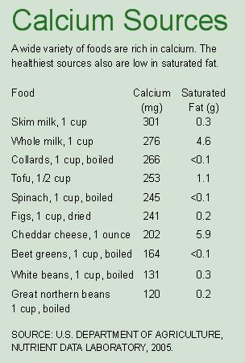

PHOTODISC
Hiking and other outdoor exercise is beneficial to your bones in two ways: Regular exercise builds bone density while exposure to sunlight allows your skin to synthesize vitamin D, which helps your body absorb calcium.